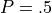
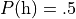
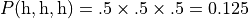
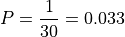

Roulette Details¶
We’ll start out by looking a the game of Roulette in Roulette Game. This will focus on Roulette as played in most American casinos.
We will follow this with Available Bets in Roulette. There are a profusion of bets available in Roulette. Most of the sophisticated betting strategies focus on just one of the even-money bets.
In Some Betting Strategies, we will describe some common betting strategies that we will simulate. The betting strategies are interesting and moderately complex algorithms for changing the amount that is used for each bet in an attempt to recoup losses.
We’ll also include some additional topics in Roulette Details Questions and Answers.
Roulette Game¶
The game of Roulette centers around a wheel with thirty-eight numbered bins. The numbers include 0, 00 (double zero), and 1 through 36. The table has a surface marked with spaces on which players can place bets. The spaces include the 38 numbers, plus a bewildering variety of additional bets, which will be detailed below.
The “bewildering” is important. Not all of the available bets are clearly identified on the layout.
After the bets are placed by the players, the wheel is spun by the house, a small ball is dropped into the spinning wheel. When the wheel stops spinning, the ball will come to rest in one of the thirty-eight numbered bins, defining the winning number. The winning number and all of the related winning bets are paid off; the losing bets are collected. The payouts vary with the likelihood of the outcome.
The numbers from 1 to 36 are colored red and black in an arbitrary pattern. They fit into various ranges, as well as being even or odd, which defines many of the winning bets related to a given number. The numbers 0 and 00 are colored green, they fit into none of the ranges, and are considered to be neither even nor odd. There are relatively few bets related to the zeroes. The geometry of the betting locations on the table defines the relationships between clusters of number bets: a group of numbers is given a colorful name like a street or a corner.
Note
American Rules
There are slight variations in Roulette between American and European casinos. We’ll focus strictly on the American version.
Available Bets in Roulette¶
There are a variety of bets available on the Roulette table. Each bet
has a payout, which is stated as where  is
the multiplier that defines the amount won based on the amount bet.
is
the multiplier that defines the amount won based on the amount bet.
A $5 bet at 2:1 will win $10. After being paid, there will be $15 sitting on the table, the original $5 bet, plus the $10 additional winnings.
Note
Odds
Not all games state their odds using this convention. Some games state the odds as “2 for 1”. This means that the total left on the table after the bets are paid will be two times the original bet. So a $5 bet will win $5, there will be $10 sitting on the table.
Yes. This is designed to confuse the players.
Here’s an image of a common layout of the betting area on a Roulette table.

Roulette Table Layout¶
The table is divided into two classes of bets. The “inside” bets are the 38 numbers and small groups of numbers; these bets all have relatively high odds. The “outside” bets are large groups of numbers, and have relatively low odds.
Here’s a list of all of the available bets:
A “straight bet” is a bet on a single number. There are 38 possible bets, and they pay odds of 35 to 1. Each bin on the wheel pays one of the straight bets.
A “split bet” is a bet on an adjacent pair of numbers. For example, 5 is adjacent to 8. The bet pays 17:1. The table layout has the numbers arranged sequentially in three columns and twelve rows. Adjacent numbers are in the same row or column. Each bin on the wheel pays from two to four of the available split bets. A bet placed on the line between 5 and 8 will be a winner if the ball lands in either the 5 bin or the 8 bin.
A “street bet” includes the three numbers in a single row, which pays 11:1. There are twelve of these bets on the table. The chips are placed at the end of the street. There’s no marking on the table. When any one of the three bins wins, the street bet is also a winner.
A square of four numbers is called a “corner bet” and pays 8:1. There are 22 of these bets available. The chips are placed at the intersection, overlapping the four numbers.
At one end of the layout, it is possible to place a bet on the Five numbers 0, 00, 1, 2 and 3. This bet pays 6:1. It is the only combination bet that includes 0 or 00. The chips are placed on the intersection of the zeroes and the 2.
A “line bet” is a six number block, which pays 5:1. It is essentially two adjacent street bets. There are 11 such combinations. The chips are placed to overlap two adjacent street bets.
The other bets are called “outside” bets. Each of these involves a group of twelve to eighteen related numbers. None of these outside bets includes 0 or 00. The only way to bet on 0 or 00 is to place a straight bet on the number itself, or use the five-number combination bet.
Here’s the list of outside bets:
Any of the three 12-number ranges (1-12, 13-24, 25-36) pays 2:1. There are just three of these bets.
Any of the three 12-number columns at 2:1 odds. All of the numbers in a given column have the same remainder when divided by three. Column 1 contains 1, 4, 7, etc., all of which have a remainder of 1 when divided by 3.
There are two 18-number ranges: 1-18 is called “low”, 19-36 is called “high”. These are called even money bets because they pay at 1:1 odds.
The individual numbers are colored red or black in an arbitrary pattern. Note that 0 and 00 are colored green. The bets on red or black are even money bets, which pay at 1:1 odds.
The numbers (other than 0 and 00) are also either even or odd. These bets are also even money bets.
Some Betting Strategies¶
Perhaps because Roulette is a relatively simple game, elaborate betting systems have evolved around it. Searches on the Internet turn up a many copies of the same basic descriptions for a number of betting systems. Our purpose is not to uncover the actual history of these systems, but to exploit them for simple OO design exercises. Feel free to research additional betting systems or invent your own.
Martingale. The Martingale system starts with a base wagering amount, w, and a count of the number of losses, c, initially 0. Each loss doubles the bet.
Any given spin will place an amount of on a 1:1 proposition (for example, red). When a bet wins, the loss count is reset to zero; resetting the bet to the base amount, w. This assures that a single win will recoup all losses.
Note that the casinos effectively prevent successful use of this system by imposing a table limit. At a $10 Roulette table, the limit may be as low as $1,000. A Martingale bettor who lost six times in a row would be facing a $640 bet, and after the seventh loss, their next bet would exceed the table limit. At that point, the player is unable to recoup all of their losses. Seven losses in a row is only a 1 in 128 probability; making this a relatively likely situation.
Waiting. Another system is to wait until some number of losses have elapsed. For example, wait until the wheel has spun seven reds in a row, and then bet on black. This can be combined with the Martingale system to double the bet on each loss as well as waiting for seven reds before betting on black.
This “wait for a favorable state” strategy is based on a confusion between the outcome of each individual spin and the overall odds of given collections of spins. If the wheel has spun seven reds in a row, it’s “due” to spin black.
1-3-2-6 System. Another betting system is called the 1-3-2-6 system. The idea is to avoid the doubling of the bet at each loss and running into the table limit. Rather than attempt to recoup all losses in a single win, this system looks to recoup all losses by waiting for four wins in a row.
The sequence of numbers (1, 3, 2 and 6) are the multipliers to use when placing bets after winning. At each loss, the sequence resets to the multiplier of 1. At each win, the multiplier is advanced through the sequence. After one win, the bet is now . After a second win, the bet is reduced to , and the winnings of are “taken down” or removed from play. In the event of a third win, the bet is advanced to . Should there be a fourth win, the player has doubled their money, and the sequence resets.
Cancellation. Another method for tracking the lost bets is called the Cancellation system or the Labouchere system. The player starts with a betting budget allocated as a series of numbers. The usual example is 1, 2, 3, 4, 5, 6, 7, 8, 9.
Each bet is sum of the first and last numbers in the last. In this case 1+9 is 10. At a win, cancel the two numbers used to make the bet. In the event of all the numbers being cancelled, reset the sequence of numbers and start again. For each loss, however, add the amount of the bet to the end of the sequence as a loss to be recouped.
Here’s an example of the cancellation system using 1, 2, 3, 4, 5, 6, 7, 8, 9.
Bet 1+9. A win. Cancel 1 and 9, leaving 2, 3, 4, 5, 6, 7, 8.
Bet 2+8. A loss. Add 10, leaving 2, 3, 4, 5, 6, 7, 8, 10.
Bet 2+10. A loss. Add 12, leaving 2, 3, 4, 5, 6, 7, 8, 10, 12.
Bet 2+12. A win. Cancel 2 and 12, leaving 3, 4, 5, 6, 7, 8, 10.
Next bet will be 3+10.
Fibonacci. A player could use the Fibonacci Sequence to structure a series of bets in a kind of cancellation system. The Fibonacci Sequence is 1, 1, 2, 3, 5, 8, 13, …
At each loss, the sum of the previous two bets – the next numbers in the sequence – becomes the new bet amount. In the event of a win, we simply revert to the base betting amount. This allows the player to easily track their accumulated losses, with bets that could recoup those losses through a series of wins.
Roulette Details Questions and Answers¶
Do the house limits really have an impact on play?
The snarky answer is “Of course they do, or the house wouldn’t impose them.”
Many betting strategies increase bets on a loss, in an effort to break even or get slightly ahead. How many losses can occur in a row?
The answer is “indefinite.” The odds of a long series of losses get less and less probable, but it never becomes zero.
For a simple  event – like flipping a coin – we can often see three heads in a row. One head is . Two heads is
. If we partition a sequence of coin tosses into pairs, we expect that 1 of 4 pairs will have two heads.
Three heads is . If we partition a sequence of coin tosses into threes, we expect that 1 of 8 triples will have three heads.
A table limit that’s 30 times the base bet, say $300 at a $10 table, is a way of capping play at an event has a . Three percent is the odds of seeing five heads in a row. If we double the bet on each loss, we’d only need to see five losses in a row to reach the table limit.
This three percent limit is in line with our ways the house maintains an edge in each game.
Why are there so many bets in Roulette?
This is a universal feature of gambling. A lot of different kinds of bets allows a player to imagine that one of those bets is better than the others.
Many of the betting strategies leverage the simplest of bets: a nearly even-money proposition like red, black, even, odd, high, or low. These are easy to analyze because they’re (nearly) and the cost of a series of losses or a series of wins is easy to compute.
When we look at Craps, the core bet – the “pass line” – is also nearly , allowing the use of similar betting strategies.
The idea of the various betting strategies, then, is to avoid all of the complexity and focus on a simple bet. For the most part, our
Playerimplementations can follow this approach.However, if we implement the complete game, we can write
Playerthat make a number of different kinds of bets to see how the house edge breaks the various betting strategies.
Looking Forward¶
Now that we’ve considered the details of the roulette game, we’ll need to look at the overall structure of the solution. It’s important to consider how the classes will interact with each other. Each class, in isolation, does very little. The aggregation of those classes will provide the required behavior.
The next chapter will propose an initial set of classes for the game.